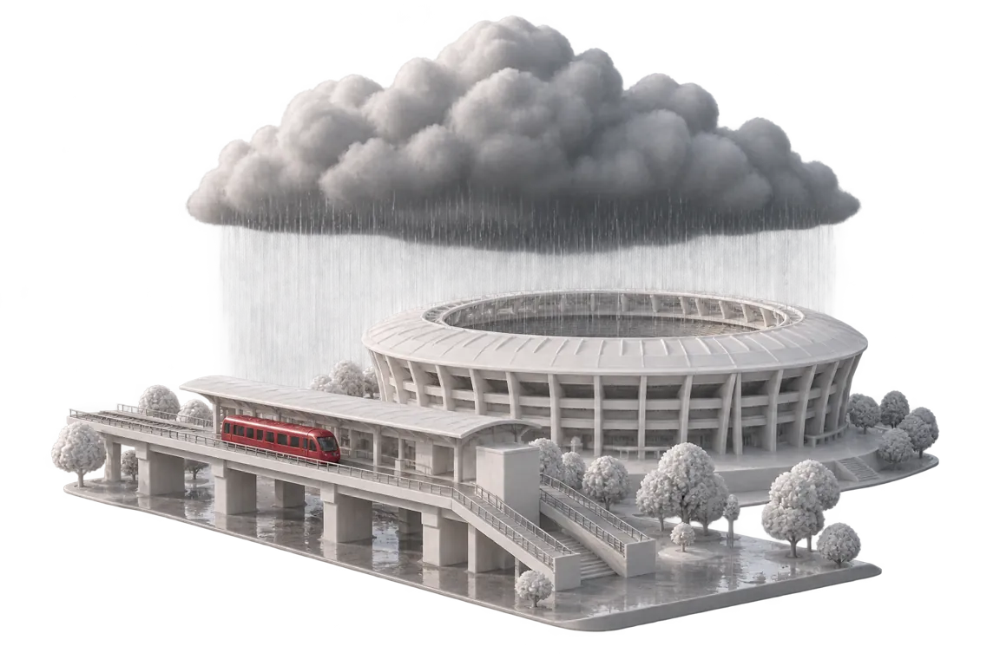
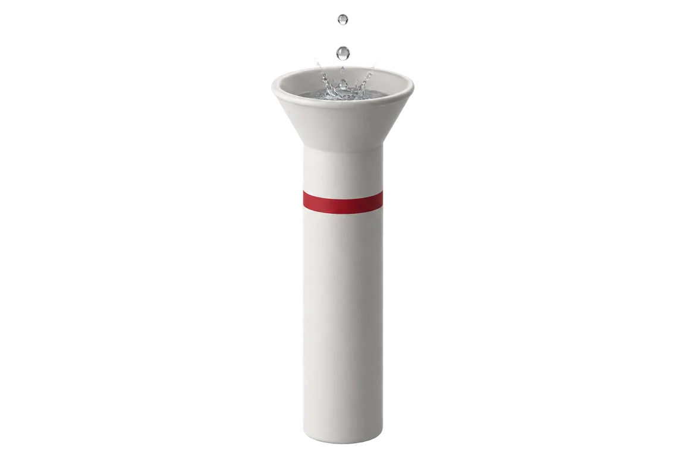

APU Cloud Innovation Hackathon 2026 Intelligent Automation & Digital Transformation
The call forevery window.
When rain, haze or a stadium crowd will meet a class, an event or a commute, Skyclause makes
one approved call, writes it down, and grades it the next day.
LY
Lim Yuh Kang@kymil4Team leader
HZ
Hee Zi Jie@AlaskanTuna
JW
Jeremy Woon@WhiteAvocad0
YL
Yow Li Hao@chaosiris
LJ
Liau Jin Siang@DrxgClanPC

SkyclauseThe existing problem
Bukit Jalil · Monday 2 November 2026
63 mm of rain in two hours.89 classes let out into it.
15:30
89 physical sessions ended at the release wave, inside the heaviest hour. A traffic account listed a flash
flood "Bukit Jalil arah Puchong".
Nobody made the callAnd nobody wrote down what was decided, or why.
SkyclauseThe existing problem
The ministry asked · the campus has no answer
Watch your local readings.Then decide alone, with no record.
7 Oct
KPT tells every university to monitor API readings in its own locality. Schools got thresholds.
Universities didn't.
KPT instruction, 7 October 2026
0
pages on haze, jerebu, thunderstorm or lightning in APU's public knowledge base.
Searched 5 November 2026
139–174
physical sessions end in each weekday exit wave, 16:30–19:15, straight onto LRT Bukit Jalil.
APU timetable, 2–6 November 2026
TodayStudents check AirVisual, organisers check Instagram, lecturers switch online ad
hoc. Each one decides alone.
SkyclauseTarget users
Who hears the call · when · who approves
For anyone with a windowto protect.
Who uses it
Club and event organisers
Outdoor and evening events around Bukit Jalil.
Also for
Commuting students
The release wave onto LRT Bukit Jalil.
Stadium nights
38,447 exits on 10 January
The Crowd pack, graded against gate taps.
Who approves
One person on the rota
Every notice, before anyone hears it.
The momentA storm cell at 15:00. A class that ends at 15:30. Thirty minutes to make the
call.
SkyclauseHow it works
Replay (2 Nov 2026)
Window · clause · call
The clause watches.A person approves.
01 · You
Declare
A window, with consent
15:30 release wave
Commute wave
Mon 2 Nov 2026 · 15:30 MYT
✓I agree to the PDPA notice
→
02 · The clause
Decide
Live signals meet the clause sheet
clauseStorm confirmed when gauge 60 min ≥ 31 mm span 15:00–16:30 thenCommute disruption
Gauge 0232901RF39.0 mm · 5 min old
Verdict at 15:05Crossing
Agent and engineDisagreement shows first
→
03 · You get
Act
One notice, approved first
Commute disruption
for the 15:30 release wave, Monday 2 November 2026. Why: Storm confirmed, gauge 39.0 mm in 60 min to
15:00 (Lebat), 5 min old at the 15:05 poll.
Approve 1 call
Template from the replay: not reviewed, not sent. Skyclause is not a safety or emergency service. In an
emergency, call 999.
SkyclauseThe crossing
Replay (2 Nov 2026)
Gauge 0232901RF · Sg. Kuyoh di LRT Bukit Jalil
15:00, the gauge crosses Lebat.15:05, the verdict flips.
14:55 · 29.5 mmNormal
15:05 poll
Commute disruption
Storm confirmed · gauge 0232901RF 39.0 mm in 60 min to 15:00 (Lebat) · 5 min old
25 minutesbefore 89 sessions end at
15:30.

SkyclauseDemo
Recorded from the live system · captured {capture date}
One window,gauge to record.
01Window
02Signals
03Crossing
04Call
05Record
06Evidence
Read the codegithub.com/m1kulabs/Skyclause
SkyclauseInnovation
What people use today
Others show the weather.Skyclause makes the call.
What exists
Knows your window
A person approves
Says "No call" when a feed is stale
Written record
Graded next day
MET Malaysia warningsstate and district thunderstorm warnings
×
×
×
×
×
AirVisual and aqicnair quality apps students use
×
×
×
×
×
PredictHQpaid event-demand forecasts
×
×
×
×
?
A group chatsomeone posts "class online?"
?
?
×
×
×
Skyclausethis project
✓
✓
✓
✓
✓
SkyclauseTechnical architecture
Feeders · workflow · actions
Code watches the sky.Gemini drafts. A person sends.
Built, not mocked
910 pilot tests pass, run on stored captures of the public feeds.
AI drafts, never sends
No notice leaves without one person's approval.
SkyclauseImpact
What a campus walks away with
Every call on the record,graded the next morning.
25min
from the crossing to the 15:30 wave on 2 November, enough to approve one call.
Replay · inferred, not measured
22
weekdays of October haze, replayed through the same clauses.
9 Hybrid · 5 Outdoor-limited · 7 Normal · 1 no data
n=0
live grades so far. Every grade is published with its count and a 95% interval.
We say so until it isn't zero
0
apps to install. Notices arrive by email, calls on a calendar URL.
Outlook and Google Calendar
3 months · Feb 2027
Calls through the monsoon for subscribed organisers and students.
6 months · May 2027
Measured outcomes for both packs; the owner sets a false-alarm ceiling.
SkyclauseResearch
The research we did · how we keep it responsible
Every number has a source.Every notice has a person.
2,269
JPS 5-minute readings stored for gauge 0232901RF, 29 Oct to 5 Nov.
59
stadium surge nights at LRT Bukit Jalil since March 2024, from Rapid Rail gate taps.
508–563
physical sessions a weekday at APU, 2–6 November, from the timetable feed.
Consent
Opt-in windows, a PDPA notice and an unticked box. Only the fields a call needs.
The camera
Points at the skyline, not at people. On probation until labelled.
Limits
Not a safety or emergency service. Never excuses attendance.
SkyclauseHow we worked
Five people · one tracker
390 issues and pull requestsin under a week.
LY
Lim Yuh Kang
@kymil4 · lead
Pilot workflows, Gemini Enterprise set-up, deployment and CI.
JW
Jeremy Woon
@WhiteAvocad0
Feeds, the clause engine and evidence packs.
HZ
Hee Zi Jie
@AlaskanTuna
Camera, windows, the sealed ledger and the Crowd pack.
YL
Yow Li Hao
@chaosiris
The pitch and the live final.
LJ
Liau Jin Siang
@DrxgClanPC
The pitch and the live final.
HowIssues specified before code. Changes tested locally before they merge. Decisions
recorded in the tracker.
SkyclauseTry it
The call forevery window.
Signals in. One person approves. The gauge grades it.